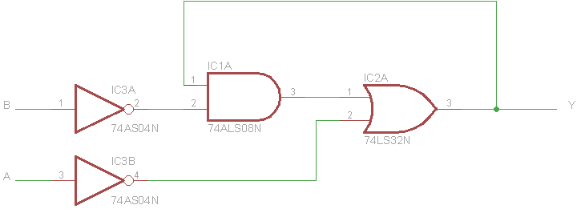
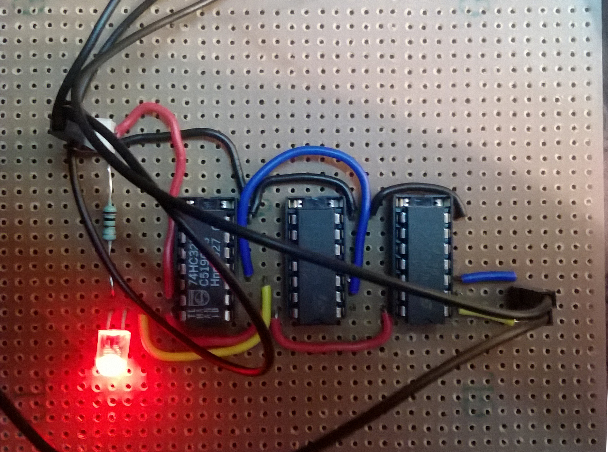

Water level detector and Motor Controller
So I had just finished my third semester at college and had some days pf leave, as a tinkerer at heart, I decided to develop something, something useful that would be put to use. I asked around for any ideas.
My Grandad, who resides in a farm house in Mhow, Madhya Pradesh, had something in mind. He has well in his house and a motor to pump water from the well, however the well is at a distance, and he has to walk a considerable disance to it. Moreover, the only way to know that the motor needs to be stopped, is when the tank starts overflowing, making the process highly environmental unfriendly
So I decided to address these two issues. My first approach was to use a microcontroller, however on further deleberation I thought that using a uC for this would be an engineering overkill. I decided to put my semester worth knowledge of Digital Electronics and Logic Design to good use and base my entire circuit on purely Digital Logic.
Now, I figured out I required 2 variables, one was to determine if the water was at the minimum level (A), the other was to determine if the water was at maximum level(B). However the problem with this approach was that there was no way for the system to determine the previous state of the machine. And so, the motor would start as soon as it came below (B), without going all the way till (A). So I added a third variable (Y) that gave me the previous state of the machine.
| Y n | A | B | Y n+1 |
|---|---|---|---|
| 0 | 0 | 0 | 1 |
| 0 | 0 | 1 | 1 |
| 0 | 1 | 0 | X |
| 0 | 1 | 1 | X |
| 1 | 0 | 0 | 0 |
| 1 | 0 | 1 | 1 |
| 1 | 1 | 0 | 0 |
| 1 | 1 | 1 | 0 |
On simplifying I got this:

I decided to go ahead and prototype the circuit, on a perfboard this is what I got:

However there was considerable flickering in the LED, and it took time to come to a stable state, the reason was ofcourse, putting the output directly back to the circuit, without using any form of latch/flip flop. So I decided to go ahead and create a new prototype with some kind of memory element and a clock. I also decided to eliminate the 3 logic ICs with a single 8:1 MUX.